CS2106 Notes AY23/24 Sem2
- CS2106 Notes AY23/24 Sem2
- Operating Systems
- Process Management
- Process Abstraction
- Process Abstraction in Unix
- Process Scheduling
- Process Alternative - Threads
- Inter-Process Communication (IPC)
- Synchronization
- Memory Abstraction
- Disjoint Memory Schemes
- Virtual Memory Management
- File Management
Operating Systems
- Operating system: A program that acts as an intermediary between a computer user and the computer hardware.
- Motivation for OS
- Abstraction:
- Hide the different low level details
- Present the common high level functionality to user
- Resource Allocator:
- Manages all resources: CPU,Memory,Input/Outputdevices
- Arbitrate potentially conflicting requests: for efficient and fair resource use
- Control Program:
- Controls execution of programs: prevent errors and improper use of the computer and provides security and protection
- 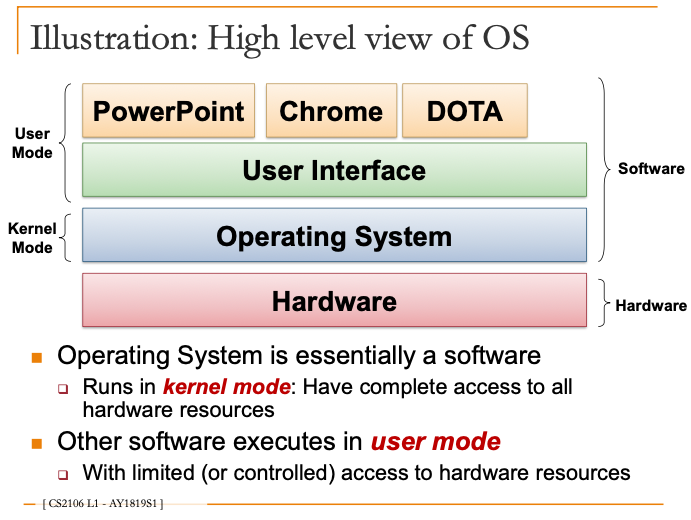
- 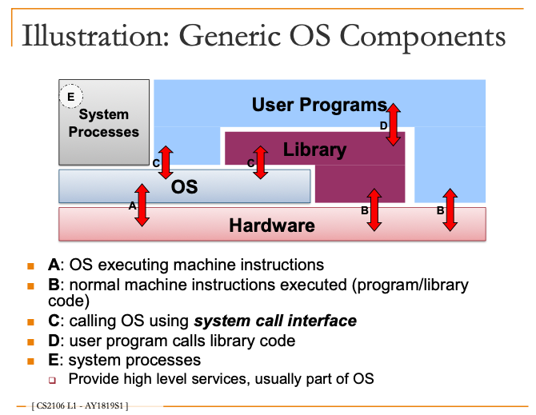
- OS can protect a user program from other malicious applications
- OS manages hardware resources for user programs
Operating System Structure
- A monolithic kernel is an operating system architecture where the entire operating system is working in kernel space
- 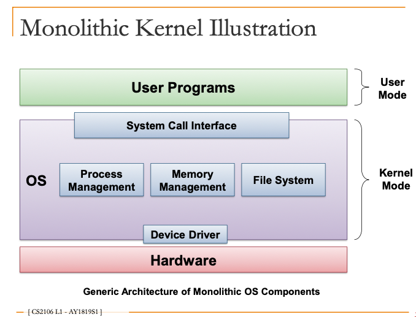
- A microkernel architecture is an operating system pattern where only basic functionality is provided in the core of the software system
- Inter-Process Communication (IPC)
- Address space management
- Thread management
- 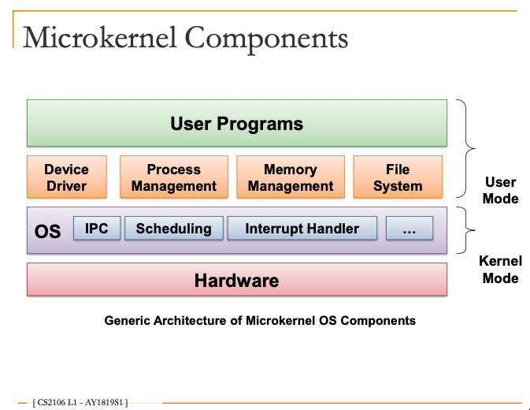
- Layered systems
- Generalization of monolithic system
- Organize the components into hierarchy of layers
- Upper layers make use of the lower layers
- Lowest layer is the hardware
- Highest layer is the user interface
- Client-Server Model
- Variation of microkernel
- Two classes of processes:
- Client process request service from server process
- Server Process built on top of the microkernel
- Client and Server process can be on separate machine!
Running OSes
- Motivation
- Operating system assumes total control of the hardware
- Operating system is hard to debug/ monitor
- Definition
- Virtual machine: a software emulation of hardware, also known as hypervisor
- 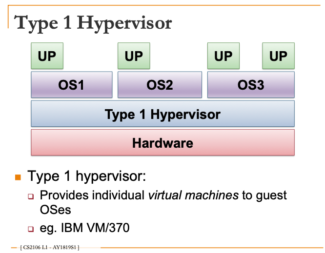
- 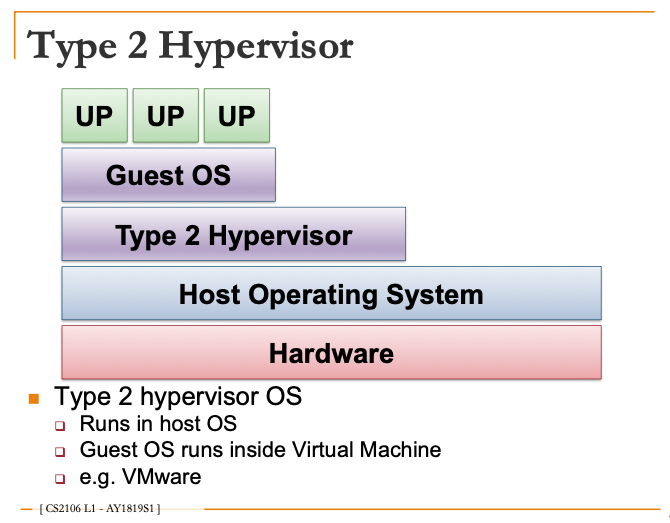
Process Management
- Process Abstraction
- Information describing an executing program
- Process/ Task/ Job is a dynamic abstracton for execution program
- Process Scheduling
- Deciding which process get to execute
- Inter-Process Communication & Synchronization
- Passing information between processes
- Alternative to Process
- Light-weight process aka Thread
Process Abstraction
Component Description
- Memory
- Storage for instruction and data
- Cache
- Duplicate part of the memory for faster access
- Usually split into instruction cache and data cache
- Fetch unit
- Loads instruction from memory
- Location indicated by a special register: Program Counter (PC)
- Functional units
- Carry out the instruction execution
- Dedicated to different instruction type
- Registers
- Internal storage for the fastest access speed
- General purpose registers: accessible by user program
- Special register: program counter
Basic Instruction Execution
- Instruction X is fetched
- Memory location indicated by Program Counter
- Instruction X dispatched to the corresponding Functional Unit
- Read operands if applicable, usually from memory or GPR
- Result computed
- Write value if applicable n Usually to memory or GPR
- Instruction X is completed
- PC updated for the next instruction
Memory Context
Function Call
- Stack memory
- The new memory region to store information during function invocation
- Information of function invocation is described by a stack frame
- Stack frame contains:
- Return address of the caller
- Arguments for the function
- Storage for local variables
- Top of stack region (first unused location) is indicated by a stack pointer
- Stack frame is added on top when a function is invoked
- Stack frame is removed from top when a function call ends
- Function call convention (example scheme)
- 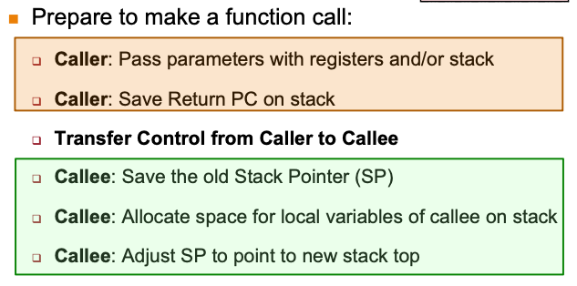
- 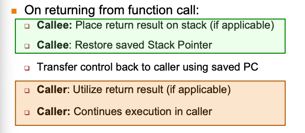
- Frame pointer
- To facilitate the access of various stack frame items
- Points to a fixed location in a stack frame
- Saved register
- Number of general purpose registers on most processors are limited
- When GPRs are exhausted, use memory to hold the GPR value, then reuse GPR, value held can be restored afterwards (known as register spilling)
Dynamically Allocated Memory
- Acquire new memory space during execution time - malloc()
- Observations
- Memory is allocated only at runtime (size is not known during compilation) -> cannot place in data region
- No definite deallocation timing (can be explicitly freed by programmer) -> cannot place in stack region
- Solution: set up a separate heap memory region
- 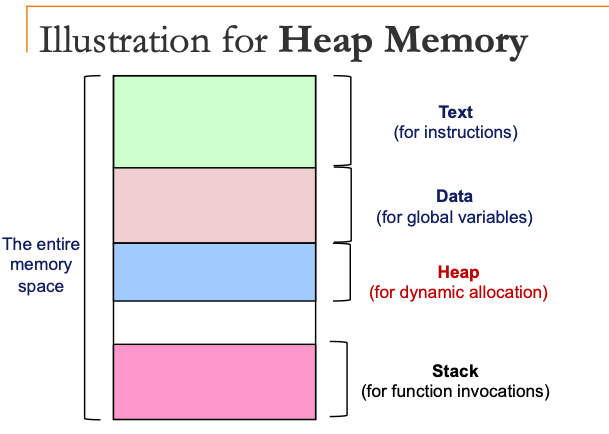
- Memory context: text, data, stack and heap
- Hardware context: general purpose register, program counter, stack pointer, stack frame pointer
OS Context
Processes
- Process Identification & Process States
-
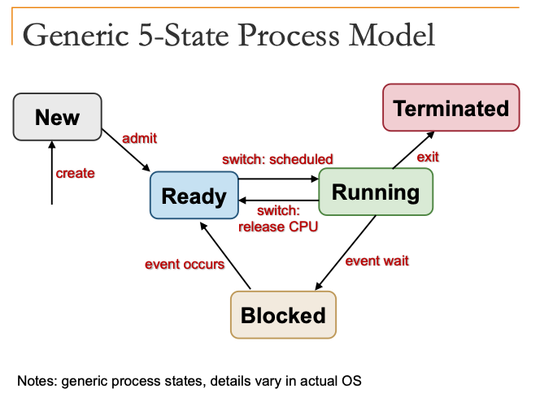
-
New
- New process created
- May still be under initialisation
- Ready
- Process is waiting to run
- Running
- Process being executed on CPU
- Blocked
- Process waiting for event
- Cannot execute until event is available
- Terminated
-
Process has finished execution, may require OS cleanup
-
Process Table & Process Control Block:
-
Entire execution context for a process
- Kernel maintains PCB for all processes
- Hardware context in PCB is updated only when process swap out
- Memory context in PCB is not the actual memory space used in process (points to real memory & contains page table)
- PCBs are part of OS memory space
-
OS context of PCB contains information used for scheduling, e.g. priority, time quantum allocated, etc.
-
System calls
-
System calls are dependent on the operating system
-
Application program interface (API) to OS
- Provides way of calling facilities/ services in kernel
- Not the same as normal function call (have to change from user mode to kernel mode)
-
User program invokes the library call (normal function call, which are programming language dependent)
- Library call (usually in assembly code) places the system call number in a designated location E.g. Register
- Library call executes a special instruction to switch from user mode to kernel mode (commonly known as TRAP)
- Now in kernel mode, the appropriate system call handler is determined:
- Using the system call number as index
- This step is usually handled by a dispatcher
- System call handler is executed: Carry out the actual request
- System call handler ended:
- Control return to the library call
- Switch from kernel mode to user mode
-
Library call return to the user program: via normal function return mechanism
-

-
System calls are more expensive than library calls due to context switching
-
Exception and Interrupt
- Exception is synchronous: occur due to program execution
- Have to execute an exception handler
- Similar to a forced function call
- Interrupt is asynchronous: events that occur independent of program execution
- Program execution is suspended
- Have to execute an interrupt handler
- 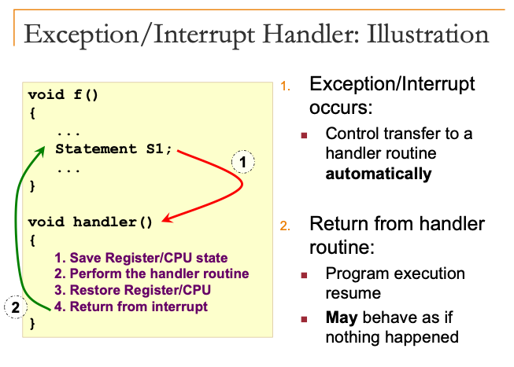
Process Abstraction in Unix
- Identification
- PID: process ID
- Information
- Process state: running, sleeping, stopped, zombie
- Parent PID
- Cumulative CPU time
- Command:
ps(process status) - Creation:
fork()# include <unistd.h>int fork();- Returns: PID of newly created process for parent and 0 for child
- Child process is a duplicate of current executable image
- Both parent and child processes continue executing after
fork()
exec()- Replace current executing process image with a new one
# include <unistd.h>int execl( const char *path, const char *arg0 ... NULL)- Path: location of executable
- e.g.
execl( "/bin/ls", "ls", "-l", NULL);=ls -l
- Termination
#include <stdlib.h>void exit( int status );- 0 = Normal Termination (successful execution)
- No return
- Most system resources used by processes are released on exit (files)
- Some resources are not releaseable (PID & status, process accounting info)
- Parent-Child Synchronisation
#include <sys/types.h> #include <sys/wait.h>int wait( int *status );- Returns the PID of the terminated child process status (passed by address)
- Parent process blocks until at least one child terminates
- 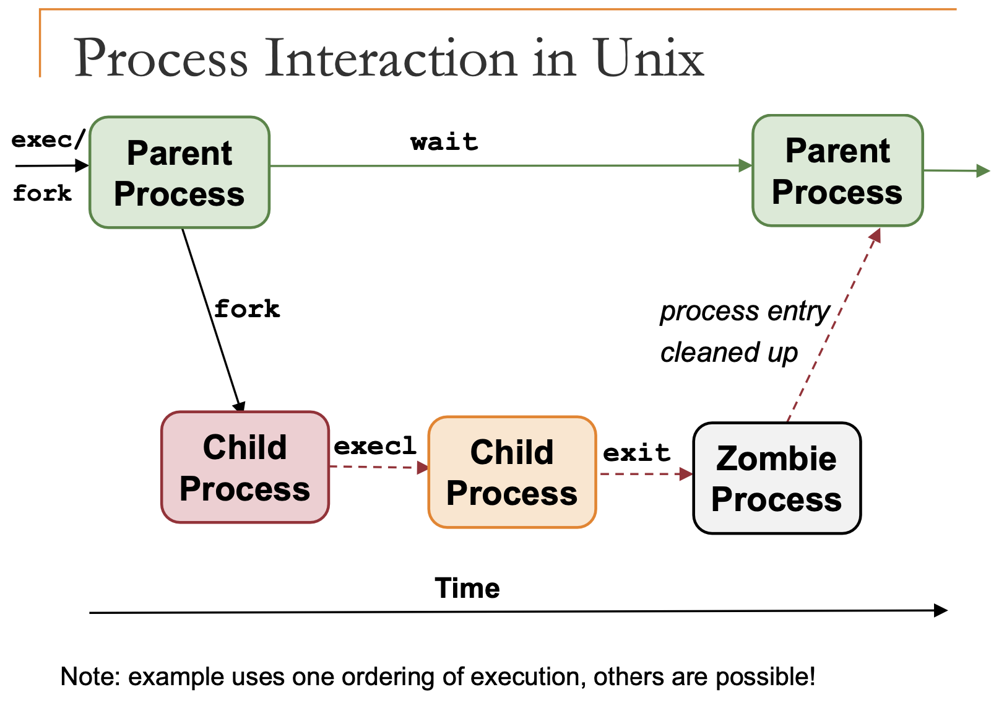
wait()creates zombie processes
Zombie Process
- Parent process terminates before child process:
- init process becomes "pseudo" parent of child processes
- Child termination sends signal to init, which utilizes wait() to cleanup
- Child process terminates before parent but parent did not call wait:
- Child process become a zombie process
- Can fill up process table
- May need a reboot to clear the table on older Unix implementations
Unix System Calls
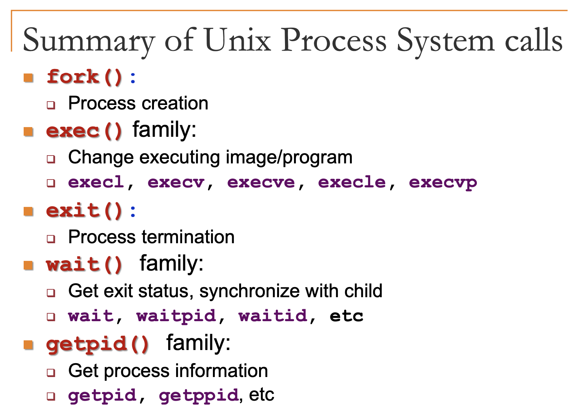
Process Scheduling
- Time quantum is always an integer multiple of interval between timer interrupt
- Given the same period of time, smaller interval between timer interrupt lengthen task turn-around time
- Shorter ITI -> More Timer Interrupt -> less time spent on actual user process
Concurrent Execution
- Concurrent processes
- Logical concept to cover multitasked processes
- 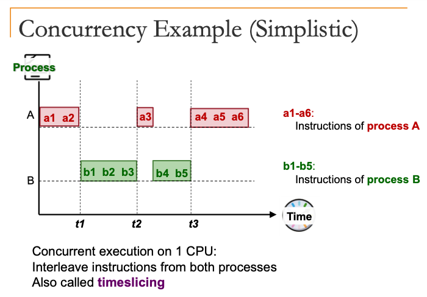
- 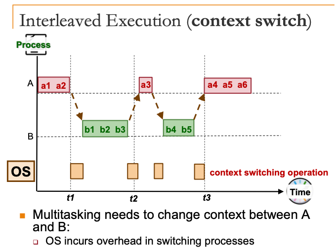
- Terminology
- Scheduler: Part of the OS that makes scheduling decision
- Scheduling algorithm: The algorithm used by scheduler
- Processing environment
- Batch processing
- No user: no interaction required, no need to be responsive
- Interactive
- With active user interacting with system
- Should be responsive, consistent in response time
- Real time processing
- Have deadline to meet
- Usually periodic process
- Criteria for all processing environments
- Fairness
- Should get a fair share of CPU time
- No starvation
- Balance
- All parts of computing system should be utilised
- Types of scheduling policies
- Non-preemptive (cooperative)
- A process stayed scheduled in running state until it blocks or gives up the CPU voluntarily
- Preemptive
- A process is given a fixed time quota to run (possible to block or give up early)
Process Scheduling Algorithms
- Criteria for batch processing
- Turnaround time: Total time taken, i.e. finish-arrival time
- Waiting time: Time spent waiting for CPU
- Throughput: Number of tasks finished per unit time i.e. Rate of task completion
- CPU utilization: Percentage of time when CPU is working on a task
First-Come First-Serve: FCFS
- Tasks are stored on a First-In-First-Out (FIFO) queue based on arrival time
- Pick the first task in queue to run until the task is done OR the task is blocked
- Blocked task is removed from the FIFO queue
- When it is ready again, it is placed at the back of queue
- i.e. just like a newly arrive task
- Guaranteed to have no starvation:
- The number of tasks in front of task X in FIFO is always decreasing -> task X will get its chance eventually
- Shortcomings
- Convoy effect: FCFS algorithm is non-preemptive in nature, that is, once CPU time has been allocated to a process, other processes can get CPU time only after the current process has finished
Shortest Job First: SJF
- Select task with the smallest total CPU time
- Need to know total CPU time for a task in advance
- Given a fixed set of tasks, average waiting time is minimised
- Starvation is possible: biased towards short jobs, such that long job may never get a chance
- 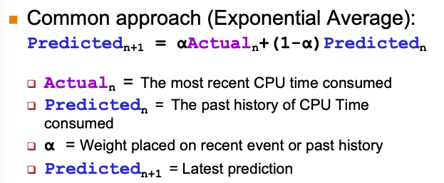
Shortest Remaining Time: SRT
- Select job with shortest remaining (or expected) time
- New job with shorter remaining time can preempt currently running job
- Provide good service for short job even when it arrives late
Round Robin: RR
- Tasks are stored in a FIFO queue
- Pick the first task from queue front to run until:
- A fixed time slice (quantum) elapsed
- The task gives up the CPU voluntarily
- The task is then placed at the end of queue to wait for another turn
- Blocked task will be moved to other queue to wait for its request
- Basically a preemptive version of FCFS
- Response time guarantee:
- Given n tasks and quantum q
- Time before a task get CPU is bounded by (n-1)q
- Timer interrupt needed:
- For scheduler to check on quantum expiry
- The choice of time quantum duration is important:
- Big quantum: Better CPU utilization but longer waiting time
- Small quantum: Bigger overhead (worse CPU utilization) but shorter waiting time
Priority Scheduling
- Assign a priority value to all tasks, select task with highest priority value
- Variants
- Preemptive version: higher priority process can preempt running process with lower priority
- Non-preemptive version: late coming high priority process has to wait for next round of scheduling
- Shortcomings
- Low priority process can starve (worse in preemptive variant)
- Possible solutions
- Decrease the priority of currently running process after every time quantum
- Give the current running process a time quantum
- Priority Inversion: Priority inversion is a situation that can occur when a low-priority task is holding a resource such as a semaphore for which a higher-priority task is waiting
Multi-level Feedback Queue (MLFQ)
- If Priority(A) > Priority(B) -> A runs
- If Priority(A) == Priority(B) -> A and B runs in RR
- Priority Setting/Changing rules:
- New job -> Highest priority
- If a job fully utilized its time slice -> priority reduced
- If a job give up / blocks before it finishes the time slice -> priority retained
- Favours IO intensive process
- Exploitations:
- Change of heart: A process with a lengthy CPU-intensive phase followed by I/O-intensive phase. The process can sink to the lowest priority during the CPU intensive phase. With the low priority, the process may not receive CPU time in a timely fashion, which degrades the responsiveness.
- Timely boost: All processes in the system will be moved to the highest priority level periodically.
- By periodically boosting the priority of all processes (essentially treat all process as “new” and hence have highest priority), a process with different behavior phases may get a chance to be treated correctly even after it has sunk to the lowest priority.
- Gaming the system: A process repeatedly gives up CPU just before the time quantum lapses.
- Accounting matters: The CPU usage of a process is now accumulated across time quanta. Once the CPU usage exceeds a single time quantum, the priority of the task will be decremented.
Lottery Scheduling
- Give out “lottery tickets” to processes for various system resources
- When a scheduling decision is needed, a lottery ticket is chosen randomly among eligible tickets
- Responsive: a newly created process can participate in the next lottery
- A process can be given Y lottery tickets to distribute to its child process
- An important process can be given more lottery tickets
- Each resource can have its own set of tickets
- Different proportion of usage per resource per task
Scheduling for Interactive Systems
-
Criteria for Interactive Environment
-
Response time: Time between request and response by system
- Predictability: Variation in response time, lesser variation -> more predictable
-
Preemptive scheduling algorithms are used to ensure good response time
- Scheduler needs to run periodically
-
Interval of timer interrupt (ITI)
- OS scheduler is triggered every timer interrupt
- Time Quantum
- Execution duration given to a process
- Could be constant or variable among the processes
- Must be multiples of interval of timer interrupt
- Large range of values
Process Alternative - Threads
Motivation for Thread
- Process is expensive:
- Process creation under the fork() model: duplicate memory space, duplicate most of the process context etc
- Context switch: Requires saving/restoration of process information
- It is hard for independent processes to communicate with each other:
- Independent memory space -> no easy way to pass information
- Requires Inter-Process Communication (IPC)
- Thread is invented to overcome the problems with process model
- Started out as a "quick hack" and eventually matured to be very popular mechanism
- Basic Idea:
- A traditional process has a single thread of control: only one instruction of the whole program is executing at any time
- Add more threads of control to the same process: multiple parts of the programs is executing at the same time conceptually
Process and Thread
- A single proces can have multiple threads: multithreaded process
- Threads in the same process shares
- Memory context: text, data, heap
- OS context: process id, files
- Unique information needed for each thread
- Identification (usually thread id)
- Registers (general purpose and special)
- Stack
- 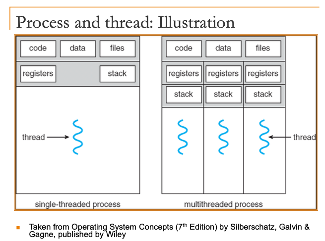
- Context Switch
- Process context switch involves:
- OS Context
- Hardware Context
- Memory Context
- Thread switch within the same process involves:
- Hardware context: Registers, "Stack" (actually just changing FP and SP registers)
- Threads: Benefits
- Economy
- Multiple threads in the same process requires much less resources to manage compared to multiple processes
- Resource sharing
- Threads share most of the resources of a process
- No need for additional mechanism for passing information around
- Responsiveness
- Multithreaded programs can appear much more responsive
- Scability
- Multithreaded program can take advantage of multiple CPUs
- Threads: Problems
- System call concurrency
- Parallel execution of multiple threads -> parallel system call possible
- Process behaviour
- fork() duplicate process, and thread behaviour is OS specific (the other threads may or may not get duplicated)
- If a single thread calls exit() in a multithreaded program, it typically terminates the entire process, not just the thread that called exit()
- When a single thread calls exec(), it replaces the entire process image with a new program. This includes all threads. The new program starts with a single thread, and the previous threads of the calling process are terminated
Thread Models
User Thread
- Thread is implemented as a user library; kernel is not aware of the threads in the process
- 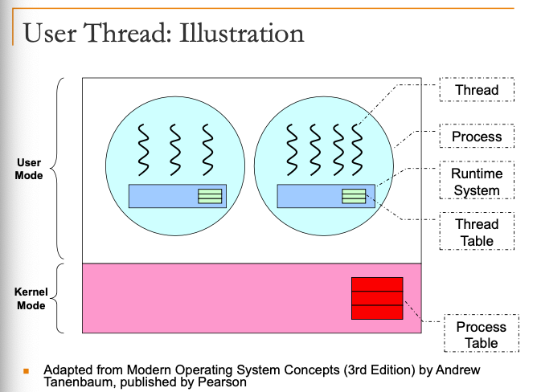
- Advantages:
- Can have multithreaded program on ANY OS
- Thread operations are just library calls
- Generally more configurable and flexible
- e.g. Customized thread scheduling policy
- Disadvantages:
- OS is not aware of threads, scheduling is performed at process level (can never exploit multi-core processors)
- One thread blocked -> Process blocked -> All threads blocked
- Cannot exploit multiple CPUs!
Kernel Thread
- Thread is implemented in the OS
- Thread operation is handled as system calls
- Thread-level scheduling is possible
- Kernel schedule by threads, instead of by process
- 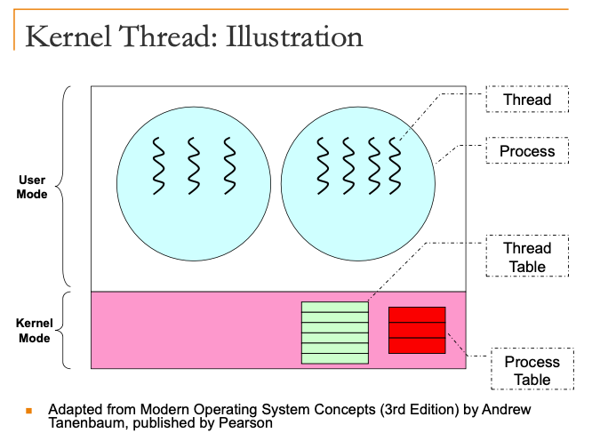
- Advantages:
- Kernel can schedule on thread levels:
- More than 1 thread in the same process can run simultaneously on multiple CPUs
- Disadvantages:
- Thread operations is now a system call!
- Slower and more resource intensive
- Generally less flexible:
- Used by all multithreaded programs
- If implemented with many features, expensive, overkill for simple program
- If implemented with few features, not flexible enough for some programs
Hybrid Thread Model
- Have both kernel and user threads
- OS schedule on kernel threads only
- User thread can bind to a kernel thread
- If we use a 1-to-1 binding in a hybrid thread model, the end result is the same as a pure kernel-thread model as each user thread is bounded to a kernel thread that can be scheduled
- Offer great flexibility
- Can limit the concurrency of any process/ user
POSIX Threads: pthread
- Header file:
# include <pthread.h> - Compilation:
gcc XXX.c -lpthread - Datatypes
pthread_t: Data type to represent a thread idpthread_attr: Data type to represent attributes of a thread- Creation syntax
- Returns (0 = success; !0 = errors)
- Parameters:
- tidCreated: Thread Id for the created thread
- threadAttributes: Control the behavior of the new thread
- startRoutine: Function pointer to the function to be executed by thread
- argForStartRoutine: Arguments for the startRoutine function
- Pthread can start on any function as long as the function signature is void f(void)
int pthread_create(
pthread_t* tidCreated,
const pthread_attr_t* threadAttributes,
void* (*startRoutine) (void*),
void* argForStartRoutine );
- Termination syntax
- Parameters:
- exitValue: Value to be returned to whoever synchronize with this thread (more later)
- If pthread_exit()is not used, a pthread will terminate automatically at the end of the startRoutine
int pthread_exit( void* exitValue );
- Join
- To wait for the termination of another pthread
- Returns (0 = success; !0 = errors)
- Parameters:
- threadID: TID of the pthread to wait for
- status: Exit value returned by the target pthread
int pthread_join( pthread_t threadID, void **status );
Inter-Process Communication (IPC)
- General Idea:
- Process P1 creates a shared memory region M
- Process P2 attaches M to its own memory space
- P1 and P2 can now communicate using M
- Any writes to M can be seen by all other parties (behaves similar to normal memory region)
- Same model for multiple processes sharing the same memory region
Process P1
1. Create M (implict attach)
2. Read/Write to M
Process P2
1. Attach M
2. Read/Write to M
- Master program
int main() {
int shmid, i, *shm;
// Create shared memory region
shmid = shmget( IPC_PRIVATE, 40, IPC_CREAT | 0600);
if (shmid == -1) {
printf("Cannot create shared memory!\n"); exit(1);
} else
printf("Shared Memory Id = %d\n", shmid);
// Attach shared memory region
shm = (int*) shmat( shmid, NULL, 0 );
if (shm == (int*) -1) {
printf("Cannot attach shared memory!\n");
exit(1);
}
// First element is used as control value
shm[0] = 0;
while(shm[0] == 0) {
sleep(3);
}
for (i = 0; i < 3; i++){
printf("Read %d from shared memory.\n", shm[i+1]);
}
// Detach and destroy shared memory region
shmdt( (char*) shm);
shmctl( shmid, IPC_RMID, 0);
return 0;
}
- Slave program
//similar header files
int main() {
int shmid, i, input, *shm;
printf("Shared memory id for attachment: ");
scanf("%d", &shmid);
// Attach to shared memory region
shm = (int*)shmat( shmid, NULL, 0);
if (shm == (int*)-1) {
printf("Error: Cannot attach!\n");
exit(1);
}
// Write 3 values
for (i = 0; i < 3; i++){
scanf("%d", &input);
shm[i+1] = input;
}
// Let master program know we are done!
shm[0] = 1;
// Detach shared memory region
shmdt( (char*)shm );
return 0;
}
- Advantages
- Efficient: only create and attach involve OS
- Ease of use: shared memory region behaves the same as normal memory
- Disadvantages
- Synchronisation: shared resource means there is a need to synchronise access
Message Passing
- Process P1 prepares a message M and send it to Process P2
- Process P2 receives the message M
-
Message sending and receiving are usually provided as system calls
-
Naming scheme
- Direct communication
- Sender/ receiver of message explicitly name the other party
- Indirect communication
- Messages are sent to/ received from message storage
- Synchronisation behaviours
- Blocking primitives (synchronous)
- Sender/ receiver is blocked until message is received/ arrived
- Non-blocking primitives (asynchronous)
- Sender: resume operation immediately
- Receiver: either receive the message or some indication that message is not ready
- Advantages
- Portable: can be easily implemented
- Easier synchronisation
- Disadvantages
- Inefficient (requires OS intervention)
- Harder to use, messages are limited in size or format
Unix Pipes
- 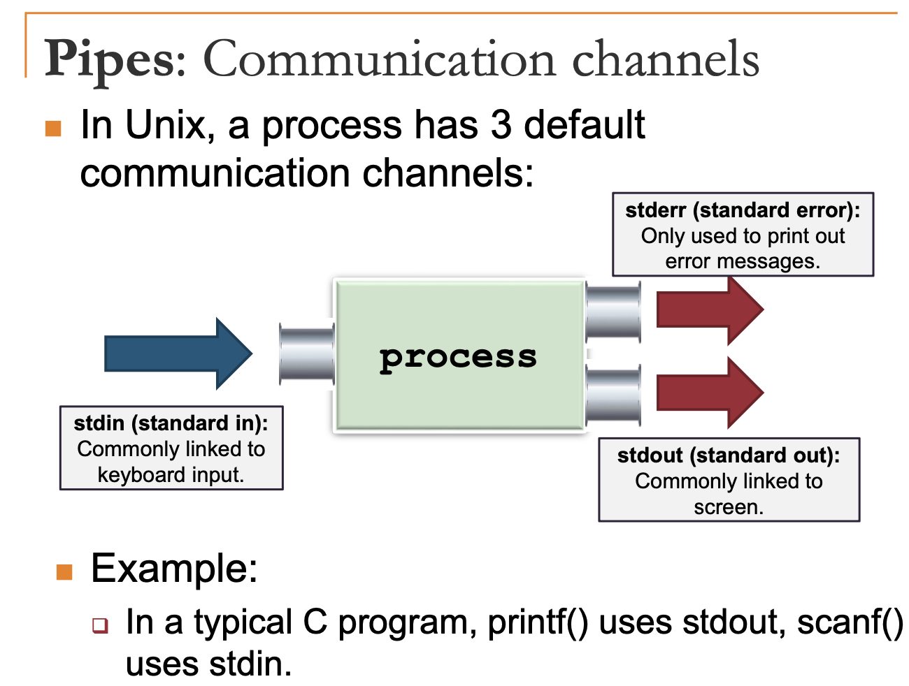
- Piping in shell
- "|" symbol to link the input/output channels of one process to another (known as piping)
- Output of a process goes directly into another as input
- Pipe functions as circular bounded byte buffer with implicit synchronization:
- Writers wait when buffer is full
- Readers wait when buffer is empty
- Variants
- Half-duplex: unidirectional, one write end and one read end
- Full-duplex: bidirectional, read/ write for both ends
- System calls
#include <unistd.h>int pipe( int fd[] )- Returns 0 to indicate success; !0 for errors
Unix Signal
- A form of inter-process communication
- An asynchronous notification regarding an event
- Sent to a process/thread
- Recipient of the signal must handle the signal by
- A default set of handlers
- User supplied handler
- E.g. kill, stop, continue, memory error, arithmetic error
- A process can install user-define handler for multiple different signals.
- [True]
- We can install user-define handler for all signals.
- [False: The "kill -9" i.e. SIGKIL is not captureable]
- A parent process can force the child processes to execute any part of their code by sending signal to them.
- [False: Only the signal handler can be triggered.]
- The "kill" signal (sent by the "kill" command) is different from the "interrupt" signal (sent by pressing "ctrl-c").
- [True]
Synchronization
- Designate code segment with race condition as critical section
- At any point in time, only one process can execute in the critical section
- Properties of correct critical section implementation:
- Mutual exclusion: Only one process can enter critical section
- Progress: If no process is in critical section, one of the waiting processes should be granted access
- Bounded wait: After process pi requests to enter critical section, there exists an upperbound of number of times other processes can enter the critical section before pi
- Independence: Process not executing in critical section should never block other process
- Incorrect synchonization:
- Deadlock: All processes blocked
- Livelock: Processes keep changing state to avoid deadlock and make no other progress
- Starvation: Some processes are blocked forever
- Implementations overview:
- Assembly level implementations: mechanisms provided by the processor
- High level language implementations: utilizes only normal programming constructs
- High level abstraction: provide abstracted mechanisms that provide additional useful features
Assembly Level Implementation
TestAndSet Register, MemoryLocation- Load the current content at MemoryLocation into Register
- Stores a 1 into MemoryLocation
- Performed as a single machine operation (i.e. atomic)
- It employs busy waiting (keep checking the condition until it is safe to enter critical section)
High Level Language Implementation
- Peterson's Algorithm
- Keep a
turnvariable, so process can only run when it is their turn - Keep a
Wantarray, so process can only run if they want - 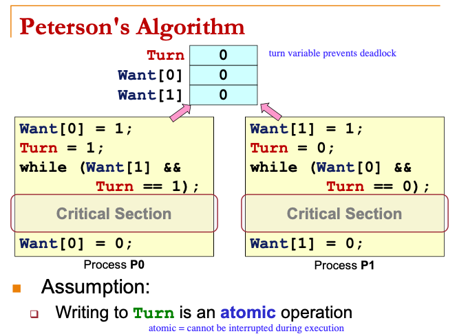
- Disadvantages
- Busy waiting
- Low level: more error prone
High Level Abstraction
- Semaphore
- A generalized synchronization mechanism
- Only behaviours are specified
- Provides
- A way to block a number of processes, known as sleeping process
- A way to unblock/ wake up one or more sleeping process
- Wait(S) (called before a process enters critical section)
- If S <= 0, blocks processes (go to sleep)
- Decrement S
- Signal(S) (called after a process exits critical section)
- Increments S
- Wakes up one sleeping process if any
- This usage is commonly known as mutex (mutual exclusion)
- Properties
- Given S initial >= 0
- Invariant: S current = S initial + number of signals() operations executed - number of wait() operations completed
Classical Synchronization Problems
- Producer consumer
- Processes share a bounded buffer of size K
- Producers produce items to insert into buffer
- Consumers remove items from buffer
- Busy waiting
- while !canProduce, producer waits
- while !canConsumer, consumer waits
- Blocking version
- wait(notFull): producers go to sleep
- wait(notEmpty): consumers to go to sleep
- signal(notFull): 1 consumer wakes 1 producer
- signal(notEmpty): 1 producer wakes 1 consumer
- Readers writers
- Processes share a data structure D
- Readers retrieve information from D
- If they are the first reader, wait for roomEmpty
- If they are the last reader, signal roomEmpty and release mutex
- Writer modifies information in D (when roomEmpty)
- Writer might face starvation if rate of arrival of readers > rate of departure of readers (so number of readers never reach 0)
- Dining philosophers
- Tanenbaum solution
- To eat, a philosopher must acquire both the left and right chopsticks
- If a philosopher cannot acquire both chopsticks, they wait until both are available
Synchronization Implementations
- POSIX semaphore
#include <semaphore.h>- Initialize a semaphore
- Perform wait() or signal() on semaphore
- pthread mutex and conditional variables
- Synchronization mechanisms for pthreads
- Mutex (pthread_mutex):
- Binary semaphore (i.e. equivalent Semaphore(1))
- Lock: pthread_mutex_lock()
- Unlock: pthread_mutex_unlock()
- Conditional Variables( pthread_cond ):
- Wait: pthread_cond_wait()
- Signal: pthread_cond_signal()
- Broadcast: pthread_cond_broadcast()
Memory Abstraction
- Types of data in a process
- Transient Data:
- Valid only for a limited duration, e.g., during function call
- e.g., parameters, local variables
- Persistent Data:
- Valid for the duration of the program unless explicitly removed (if applicable)
- e.g., global variable, constant variable, dynamically allocated memory
- If two processes are using the same physical memory, there might be conflicts in memory access because both processes assume memory starts at 0
- Use logical adddress
- 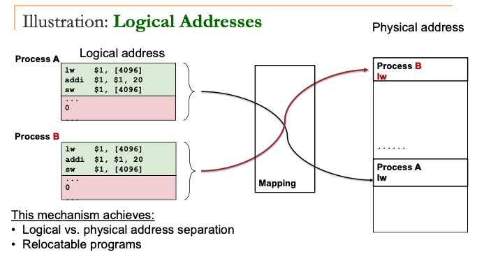
Contiguous Memory Management
- Assumptions
- Each process occupies a contiguous memory region
- Physical memory is large enough to contain one or more processes with complete memory space
Memory Partitioning
- Fixed-Size Partitions
- Physical memory is split into fixed number of partitions of equal size
- A process will occupy one of the partitions
- Causes internal fragmentation (space leftover within partition when process takes less than partition size)
- Variable-Size Partitions
- Partition is created based on the actual size of process
- OS keep track of the occupied and free memory regions
- Causes external fragmentation from removing processes
- Can use a linked list (takes more time) to move occupied partitions and create larger holes
- Allocation algorithm
- First-fit
- Take the first hole that is large enough
- Next-fit
- Search from the last allocated block and wrap around
- Best-fit
- Find the smallest hole that is large enough
- Worst-fit
- Find the largest hole
- Buddy system
- Free block is split into half repeatedly to meet request size
- The two halves forms a sibling blocks (buddy blocks)
- When buddy blocks are both free, they can be merged to form larger block
- 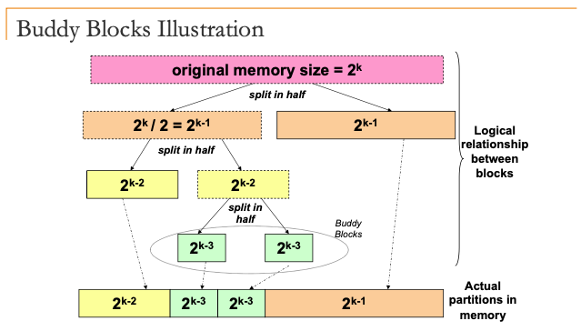
Disjoint Memory Schemes
Paging
- Physical memory is split into regions of fixed size (known as physical frames)
- Logical memory is similarly split into regions of the same size (logical page)
- Lookup table to provide translation between logical page to physical page (page table)
- Physical address = frame_number x sizeof(physical_frame) + offset
- Offset: displacement from the beginning of the physical frame
- Address translation formula
- Page/Frame size of 2^n
- m bits of logical address
- Frame number represented by (m - n) bits
- Offset represented by n bits
- 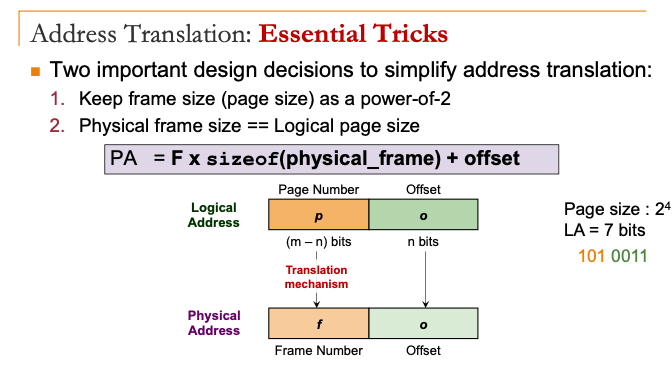
- To store the page table,
- PCB (only software)
- Requires 2 memory accesses for every memory reference
- Translation Look-Aside Buffer (TLB)
- On-chip component to support paging
- TLB hit: Frame number is retrieved to generate physical address
- TLB miss: memory access to access the page table
- When context switch occurs, TLB entries are flushed
- New process will not get incorrect translation
Protection
- Access-Right Bits
- Each page table entry has a writable, readable, executable bit
- Every memory access is checked against the access right bits in hardware
- Valid Bit
- Included in each page table entry
- Indicated whether the page is valid to access by the process
- Every memory access is checked against this bit in hardware:
- Out-of-range access will be caught by OS in this manner
Page Sharing
- Several processes to share the same physical memory frame
- Use the same physical frame number in the page table entries
- Implementing Copy-On-Write
- Parent and child process can share a page until one tries to change a value in it
- 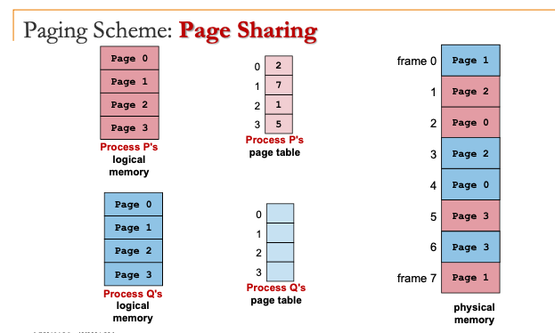
Segmentation Scheme
- Manage memory at the level of memory segments
- Each memory segment
- Has a name
- Has a limit
- Memory references specified as "segment name + offset"
- Logical address translation
- Each segment mapped to a contiguous physical memory region with a base address and a limit/size
- Logical address
<SegID, Offset> - SegID is used to look up
- Physical address = base + offset
- Offset < limit for valid access
- Each segment is an independent contiguous memory space
- Segmentation requires variable-size contiguous memory regions (can cause external fragmentation)
Segmentation with Paging
- Each segment is composed of several pages instead of a contiguous memory region
- 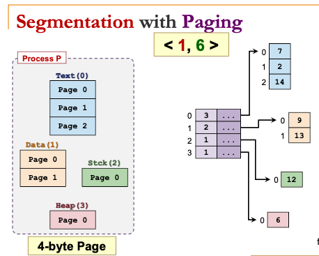
Virtual Memory Management
- Secondary storage capacity >> Physical memory capacity
- Some pages are accessed much more often than others
- Basic idea: split the logical address space into small chunks (some are in physical memory, others in secondary storage)
Extended Paging Scheme
- Use page table for virtual -> physical address translation
- Two page types:
- Memory resident (pages in physical memory)
- Non-memory resident (pages in secondary storage)
- Use a resident bit in the page-table entry
- CPU can only access memory resident pages
- If attempt to access non-resident, page fault
Hardware
-
Check page table:
-
Is page X a memory resident?
- Yes: Access physical memory location. Done.
- No: raise an exception!
OS
- Page Fault: OS takes control
- Locate page X in secondary storage
- Load page X into a physical memory
- Update page table
- Go to step 1 to re-execute the same instruction
- This time with the page in memory
Issues
- Secondary storage access time >> physical memory access time
- If memory access results in page fault most of the time
- To load non-resident pages into memory
- Entire system can slow down significantly (known as thrashing)
- Locality principles
- Temporal Locality:
- Memory address used now is likely to be used again
- Spatial Locality:
- Memory addresses close to the address that is used now is likely to be used soon
- Demand paging
- Process start with no memory resident page
- Only allocate a page when there is a page fault
- Fast startup time for new process
- Might be sluggish at the start due to page faults
Page Table Structure
- Page table information is kept with the process information and takes up physical memory space
- Direct paging
- Keep all entries in a single table
- Virtual Address: 32 bits, Page Size = 4KiB
- P=32–12=20; 2^20 pages
- Size of PTE = 2 bytes
- Page Table Size = 2^20 * 2 bytes = 2MiB
- 2-level paging
- Process may not use entire virtual memory space
- 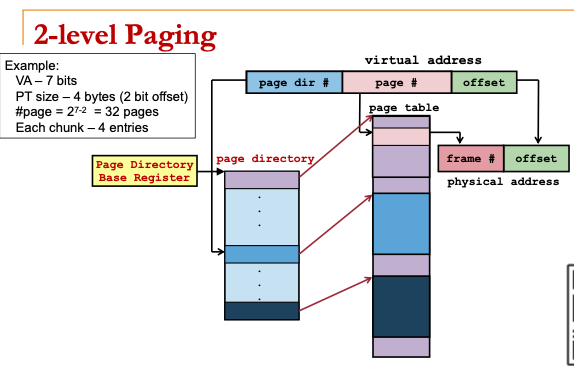
- If original page tabel has 2^P entries
- With 2^M smaller page tables, M bits is needed to uniquely identify one page table
- Each smaller page table contains 2^(P-M) entries
- 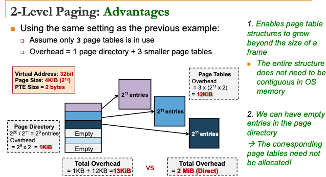
- Problem: two serialized memory accesses just to get frame number
- TLB misses experience longer page-table walks
- Page-table walk: the traversal of page-tables in hardware
Inverted Page Table
- Page table is a per-process information
- With M processes in memory, there are M independent page tables
- Observation:
- Only N physical memory frames can be occupied
- Out of the M page tables, only N entries are valid!
- Huge waste: N << Overhead of M page tables
- Idea:
- Keep a single mapping of physical frame to
<pid, page#> - pid = process id , page# = logical page number in the corresponding the process
- page# is not unique among processes
- pid + page# can uniquely identify a memory page
- 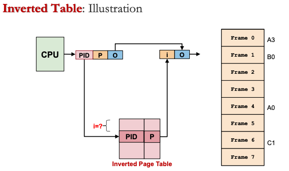
- Entries are ordered by frame number instead of page number
Page Replacement Algorithms
- No free physical memory frame during a page fault
- Memory access time: T access = (1 - p) _ T mem + P _ T page fault
- p = probability of page fault
- T mem = access time for memory resident page
- T page fault = access time if page fault occurs
Optimal Page Replacement (OPT)
- Replace the page that will not be needed again for the longest period of time
- Guarantees minimum number of page fault
- But future knowledge of memory references is needed
FIFO Page Replacement Algorithm
- Memory pages are evicted based on their loading time
- Evict the oldest memory page
- OS maintains a queue of resident page numbers
- But FIFO does not exploit temporal locality
Least Recently Used (LRU)
- Make used of temporal locality
- Replace the page that has not been used in the longest time
- But implementation is difficult
- Using a "time" counter: need to search through all pages to find the smallest
- Using a "stack": hard to implement in hardware because it is not a pure stack
Second-Chance Page Replacement (aka CLOCK)
- Modified FIFO to give a second chance to pages that are accessed
- Each page table entry has a reference bit
- Degenerate into FIFO algorithm
Algorithm:
- The oldest FIFO page is selected (victim page)
- If reference bit == 0, page is replaced
- If reference bit == 1, page is skipped and reference is cleared to 0
Frame Allocation
- Best way to distribute N physical memory frames to M processes competing for frames
- Equal allocation
- Each process gets N/M frames
- Proportional allocation
- Each process gets size_of_process / total_size * N frames
- Victim page selected among pages of the process that causes page fault: local replacement
- Number of frames allocated to a process remain constant
- If frames allocated not enough, it may hinder the progress of process
- Victim page selected among all physical frames: global replacement
- Allow self-adjustment between processes
- Badly behaved processes can steal frames from other processes
- Thrashing
- Insufficient physical frame
- In global replacement: A thrashing process "steals" page from other process cause other process to thrash (Cascading Thrashing)
- In local replacement: thrashing can be limited to one process, but that process can use up the I/O bandwidth and degrade performance of others\
- Right number of frames: working set
- Transient region: working set changing in size
- Stable region: working set about the same for a long time
File Management
- 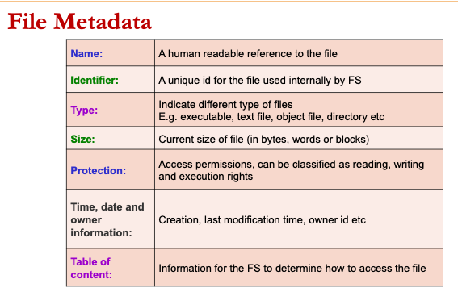
- Common file types:
- regular files: contains user information
- Directories: system files for file system structure
- Special files: character/ block oriented
- File types:
- Use file extension as indication
- Use embedded information in the file (magic number stored at beginning of file)
File Protection
- Controlled access to the information stored in a file
- Access: read, write, execute, append, delete, list
- Users classified into three classes:
- Owner
- Group
- Universe
- Define permission of three access types: r w x r w x r w x
- Access control list can be
- Minimal (same as ppermission bits)
- Extended (added named users/ groups)
File Data
- Structure
- Array of byes
- Each byte has a unique offset from file start
- Fixed length records
- Array of records that can grow and shrink
- Variable length records
- Flexible but harder to locate
- Access methods
- Sequential access
- Data read in order, starting from beginning
- e.g. cassette tapes
- Random access
- Data can be read in any order
- Read (offset): every read operation explicitly states the position to be accessed
- Seek (offset): special operation to move to a new location in file
- Direct access
- Used for file that contains fixed-length records
- Allow random access to any record directly
- 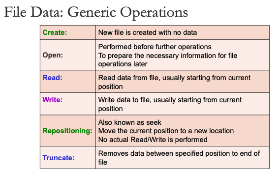
- OS provides file operations as system calls
- Provide proection, concurrent and efficient access
- 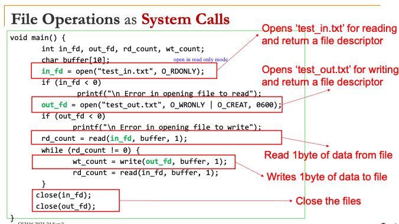
File Information
- Information kept for an opened file
- File pointer: keep track of the current position within a file
- File descriptor: unique identifier of the file
- Disk location: actual file location on disk
- Open count/ reference count: number of proccesses that have the file opened
- 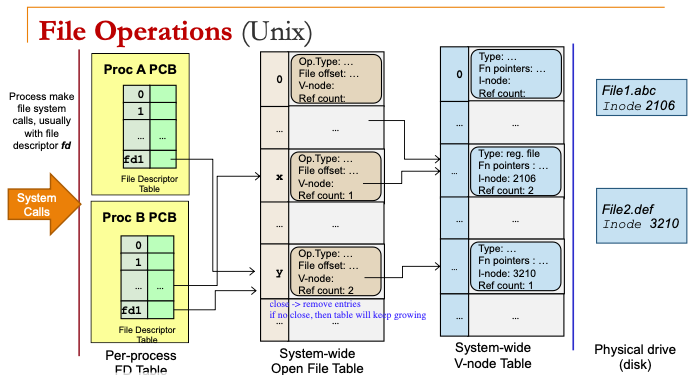
- Per-process open-file table:
- To keep track of the open files for a process
- Each entry points to the system-wide open-file table entries
- System-wide open-file table:
- To keep track of all the open files in the system
- Each entry points to a V-node entry
- System-wide V-node (virtual node) table
- To link with the file on physical drive
- Contains the information about the physical location of the file
Processes and Files
- Process A tries to open a file that is currently being written by Process B.
- OS uses the Open File Table to check for existing opened file.
- Since the file is already opened for reading, it can reject the file open system call from process A.
- Process A tries to use a bogus file descriptor in a file-related system call.
- Since Process A passed the file descriptor (fd for short) to OS as parameter, OS can check whether that particular entry is valid (or even exists) in the PCB of A.
- If the fd is out of range, non-existent etc, OS can reject the file-related system calls made by Process A.
- Process A can never "accidentally" access files opened by Process B.
- Since the fd index is in process specific PCB, there is no way Process A can access Process B's file descriptor table.
- Process A and Process B reads from the same file. However, their reading should not affect each other.
- Process A and Process B can have their own fds, which refers to two distinct locations in the open file table.
- Each entry of the open file table keep track of the current location separately. This enables Process A and Process B to read from the same file independently.
- Redirect Process A's standard input / output, e.g. "a.out < test.in > test.out".
- So, for all file redirections, it is a simple question of:
- Opening and possibly creating the file.
- Replace the corresponding file descriptor to point to the entry from (1) in the open file table.
Directory
- Used to
- Provide a logical grouping of files
- Keep track of files
- Single-Level
- All files are in root directory
- Tree-Structured
- Directories can be recursively embedded in other directories
- Direct Acyclic Graph
- If a file can be shared, only one copy of actual content
- "Appears" in multiple directories with different file names
- Alias is for files only, not directories
- Unix hard link (
ln)- Directory A and B have separate pointers to the actual file F in disk
- Can only be deleted when all links are deleted
- General Graph
- Users have the capability to create a cycle of directory within a directory
- Hard to traverse, and need to prevent infinite looping
- Unix symbolic link/ soft link (
ln -s)- Symbolic link is a special link file that contains the path name of the file F
- When link file is accessed, it finds where the F is and accesses F
- Simple deletion: link is deleted, not file; file is deleted, dangling link
File System Implementations
- 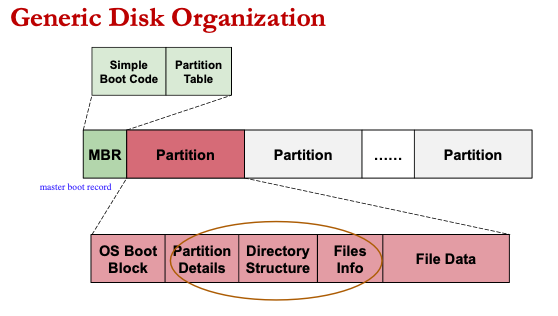
- Master Boot Record (MBR) at sector 0 with partition table
- Followed by one or more partitions
- Each partition can contain an independent file system
File Block Allocation
- Contiguous
- Allocate consecutive disk blocks to a file
- External fragmentation
- Linked list
- Keep a linked list of disk blocks that each stores next disk block number and actual file data
- Random access in a file is slow
- File allocation table (FAT)
- 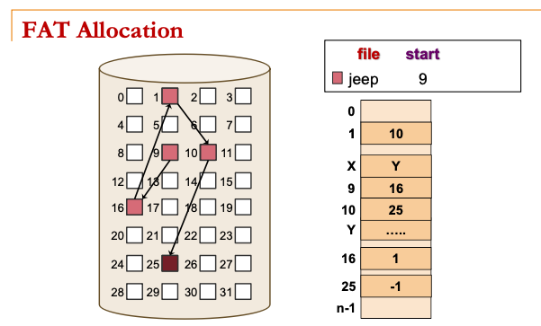
- FAT entry contains either:
- FREE code (block is unused)
- Block number of next block
- EOF code (i.e., NULL pointer)
- BAD block (block is unusable, i.e., disk error)
- Faster random access
- FAT keeps track of all disk blocks in a partition, which will be expensive when disk is large
- Indexed allocation
- Maintain blocks for each file; IndexBlock[N] == Nth block address
- Lesser memory overhead
- Limited maximum file size (max number of blocks == number of index block entries)
- I-Node Data
- Every file/ directory has an I-node associated
- Allows fast access to small file
- Flexibility in handling huge files
- 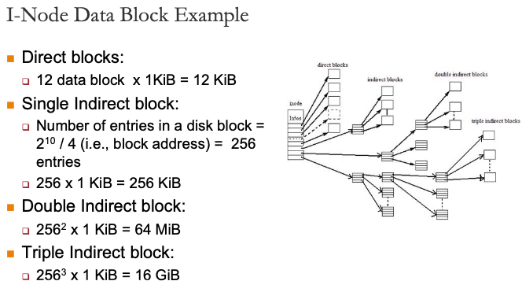
Free Space Management
- Maintain free space information
- Bitmap
- Each disk block represented by 1 bit
- Linked list
- Each disk block contains number of free disk block numbers or pointer to next free space
- Easy to locate free block
- High overhead
Implementing Directory
- Keep track of files in directory
- Map the file name to file information
- Linear list
- Each directory consists of a linear list where each entry represents a file
- Locating a file requires linear search
- Hash table
- Each directory consists of a hash table of size N
- Fast lookup
- Hash table has limited size
- File information
- Each directory consists of file information (name and disk block information)
- Stored in directory entry directly OR
- Store only name and point to some data structure for other info